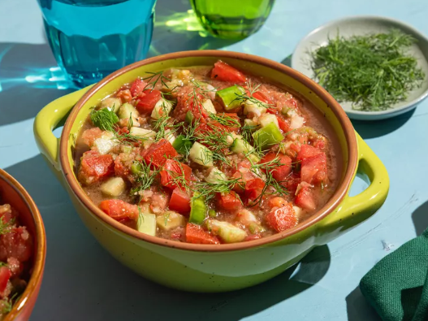

Dill Gazpacho is a refreshing and vibrant cold soup that blends the crispness of cucumbers, the mild sweetness of tomatoes, and the zesty brightness of fresh dill. A twist on the traditional Spanish gazpacho, this variation introduces a herbal, aromatic layer that enhances its cooling effect—perfect for hot summer days. Garlic, onion, and a splash of lemon or vinegar add depth and tang, while olive oil gives it a silky texture. Served chilled, this no-cook soup is both nutritious and hydrating, making it a light yet flavorful choice for a healthy starter or a revitalizing mid-day meal.
1. Prepare the vegetables:
2. Blend the base:
3. Season and emulsify:
4. Adjust the consistency:
5. Chill the soup:
6. Serve: